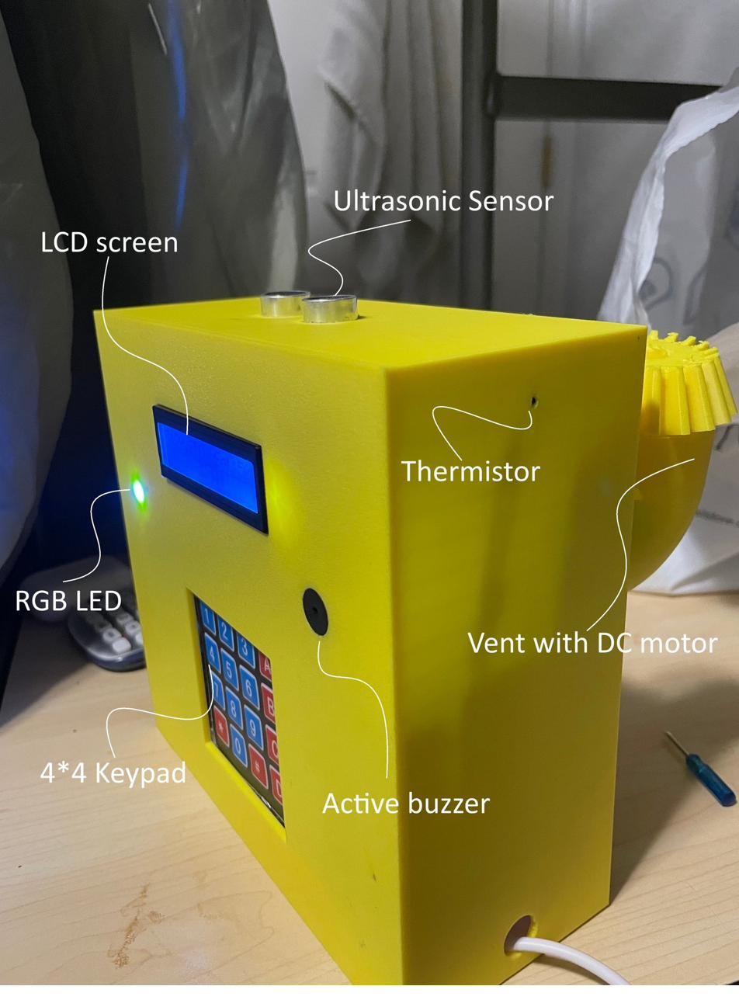
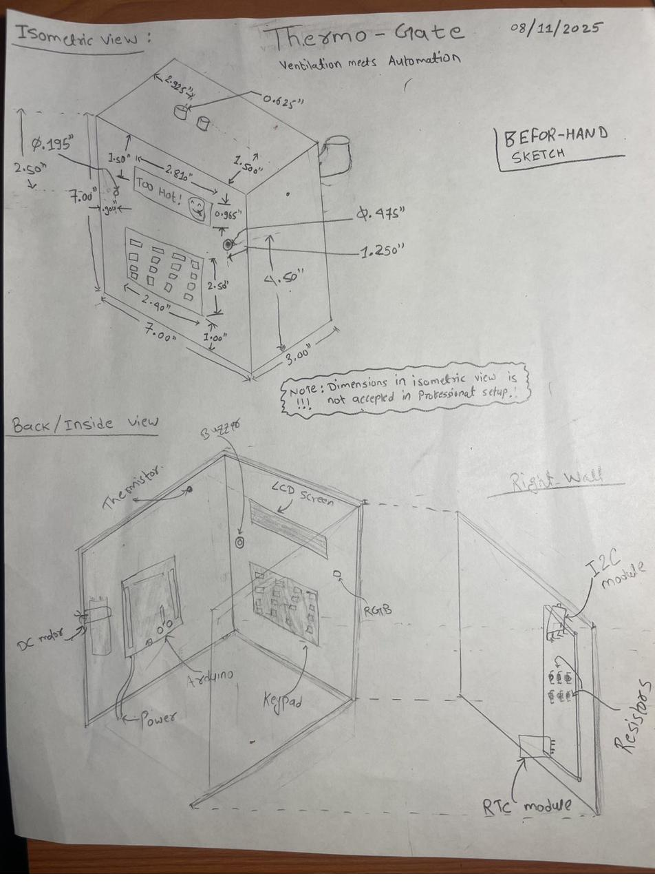

Electronics Integration
Thermogate
A solo-built, temperature-controlled vent system: a thermistor reads ambient temperature and an Arduino drives a fan in a closed feedback loop to hold a setpoint within ±2°C. Designed in SolidWorks, 3D printed, and programmed end-to-end, with keypad control, an LCD, and color-coded feedback.



Key Specs
- Build: solo — CAD, 3D printing, wiring, and code
- Controller: Arduino Uno R3 · ~10 components
- Control: closed-loop feedback — continuously senses and corrects
- Sensing & accuracy: thermistor, ±2°C
- Actuation: DC fan — rotation direction sets heating vs. cooling
- Interface: keypad input · LCD readout · RGB status light (red / yellow / green)
- Extras: digital clock, alarm, music player, °C↔°F converter
- Use cases: room ventilation, electronics cooling, greenhouse climate control
Overview
Thermogate is a temperature-controlled vent system I designed and built entirely on my own — from the SolidWorks enclosure and 3D-printed parts to the wiring and the Arduino code. A thermistor reads the ambient temperature, and the Arduino drives a DC fan in a closed feedback loop to hold a target setpoint within ±2°C, continuously comparing the live reading against the setpoint and correcting; the fan's rotation direction determines whether it works to raise or lower the temperature. The user sets the target on a keypad, an LCD shows the time, setpoint, and live reading, and an RGB LED signals status at a glance — red for hot, yellow as it approaches, green once it's at temperature. It's built to be useful anywhere temperature matters: room ventilation, electronics cooling, or greenhouse climate control.
Problem
The goal was a single device that could sense temperature and respond to it automatically, accurately, and clearly enough for someone to actually use. That meant tying a live sensor reading to a physical action in a closed feedback loop, giving the user a simple way to set and monitor the target, and packing everything into a compact, serviceable enclosure.
Process
I started from a concept sketch, modeled the enclosure in SolidWorks, and 3D printed the parts with tolerances in mind. I wired roughly ten components around an Arduino Uno R3 — thermistor, DC fan, LCD, keypad, and RGB LED — and wrote the control logic myself, leaning on AI to write and debug code as I went. Beyond the core temperature control, I layered in extra features to make it more useful and engaging: a digital clock, an alarm, a music player, and a °C-to-°F converter, with the RGB LED also pulsing to the music's pitch.
What I learned
Three things turned out harder than they looked. Fitting all the wiring and components into a compact housing took careful planning. The thermistor had to stick out just far enough to read the room's temperature rather than the heat building up inside the enclosure — a small placement detail with a big effect on accuracy. And the closed-loop control had to spin the fan clockwise or counter-clockwise depending on whether the system needed to raise or lower the temperature. Getting all three right is what turned a wiring diagram into a device that actually holds a setpoint.